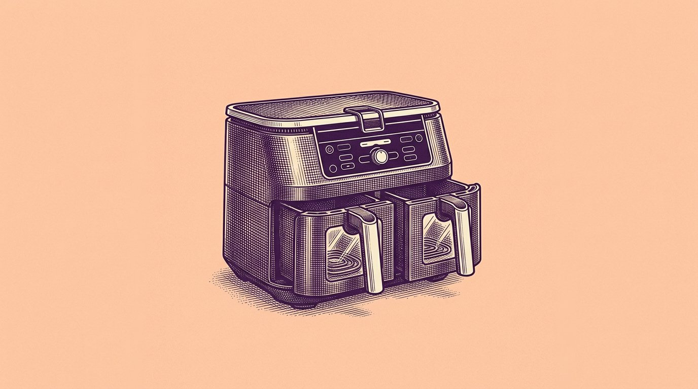
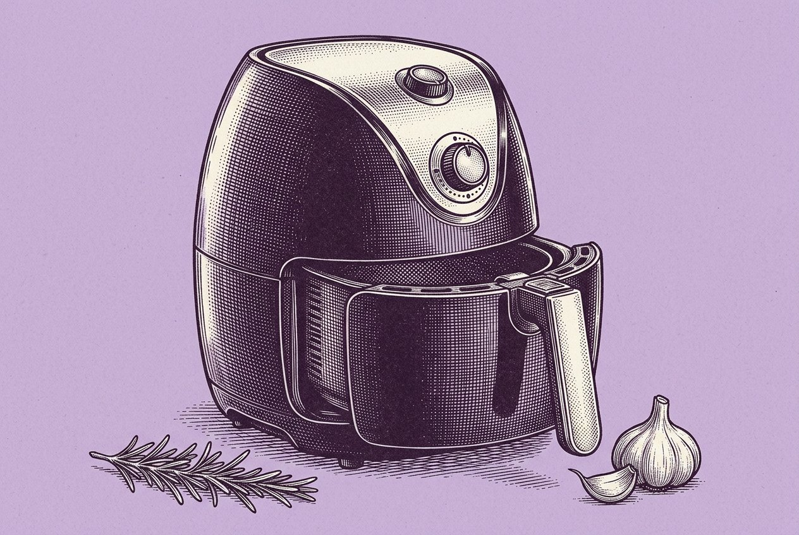
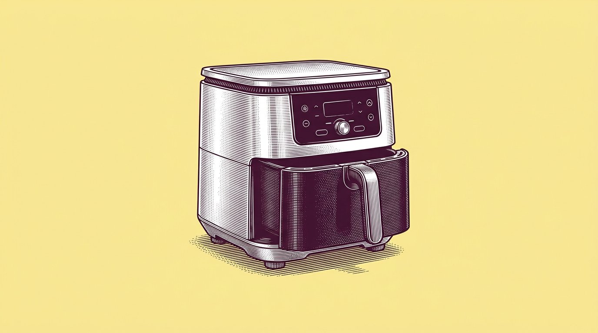
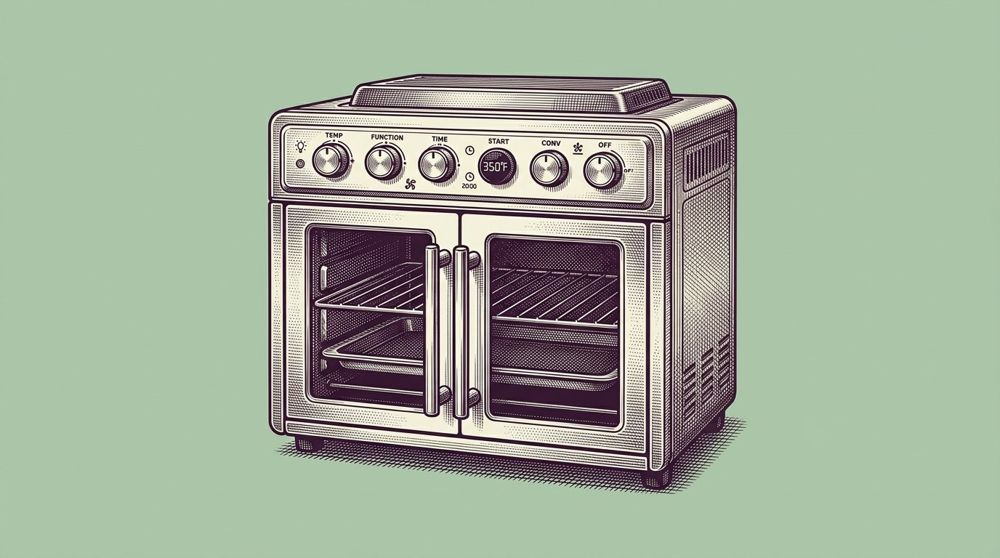

FIG. 01Format illustration6 qt · Two baskets
Chefman Dual Basket
Cooking dinner and a side? Compare the size of each basket, not just their combined volume.
Explore this format →ISSUE Nº 01 THE COUNTERTOP EDIT
One basket, two baskets, or French doors? Find the format that fits your counter and the way you cook.

SHOP BY FORMAT

FIG. 01Format illustrationCooking dinner and a side? Compare the size of each basket, not just their combined volume.
Explore this format →
FIG. 03Format illustrationPrefer one basket? Check whether your usual batch fits in a single layer.
Explore this format →
FIG. 02Format illustrationWant room for a tray? Check the usable rack dimensions and how far the doors swing.
Explore this format →The edit
An air fryer can tell you the outside is done. Only a probe tells you the inside is.
CHEF iQ · Wireless meat thermometer
Three probes that stay in the food while it cooks, so you can watch the middle come up to temperature instead of opening the oven to check. The seller also lists air fryers among its uses.
See listing source Read the note
Listing source · Price, rating and delivery are shown on Amazon, where they are always current.
ThermoMaven · Digital meat thermometer
The small, cheap end of the thermometer question: one probe, one reading, no app and no charging base. It answers the only question an air fryer cannot answer for you.
See listing source Read the note
Listing source · Price, rating and delivery are shown on Amazon, where they are always current.
Start here
If you are not ready to shop, start with the thing that is making the choice hard.
A drawer and a door change how often you intervene, what fits inside and how much counter you give up.
Compare the shapes 02A quart is a volume. You cook on a surface. Convert one into the other before you buy.
Work out capacity 03The parts you wash and the space it occupies decide that. Both are checkable in five minutes.
Check the everyday cost
Seasonal · The day after
A holiday table is an exercise in bacterial arithmetic. Here is the rule in the government's own words, the numbers that follow it, and the one job a small hot box is genuinely good at.
Bacteria grow rapidly between 40 degrees F and 140 degrees F. Once food is safely cooked, hot food has to be kept at 140 degrees F or warmer. Within 2 hours of cooking - or of coming off whatever is keeping it warm - leftovers must be refrigerated.
Read the guideThe journal
Question-shaped, answer-first, and honest about what a listing can and cannot tell you.
Seasonal · 6 min read
A holiday table is an exercise in bacterial arithmetic. Here is the rule in the government's own words, the numbers that follow it, and the one job a small hot box is genuinely good at.
Read the guideTools · 6 min read
An instrument that is four degrees out does not look broken. Two tests - one freezing, one boiling - tell you whether to adjust it, forgive it or replace it.
Read the guideCooking · 5 min read
Browning arrives early in a small, fast, windy oven. The advice that has stood for decades is a number, a placement and a warning about trusting colour.
Read the guideSeasonal · 3 min read
Plan backward from serving time: check the tray, count the batches, and give the meals you already cook more weight than the number on the box.
Read the guideHow this works
Crisp & Counter is a small publication, not a retailer. Each of the five links you see was opened, followed to the Amazon listing it lands on, and matched to the product named here. What we cannot verify, we leave out.
The result is a shop with fewer numbers than usual and no invented ones. Ratings, prices and stock are left where they belong: on Amazon, changing in real time.
Keep in touch
There is no mailing list yet, and no form to fill in. The site publishes an RSS feed: point a reader at it and new guides arrive when they are written. When a mailing list exists, this is where it will be — with a date and a privacy page behind it.